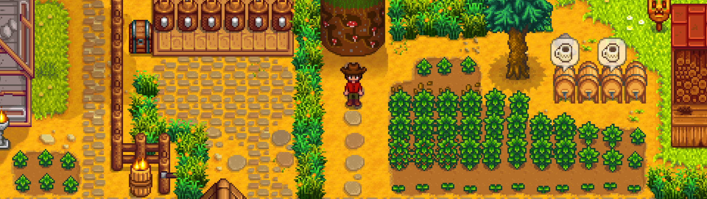
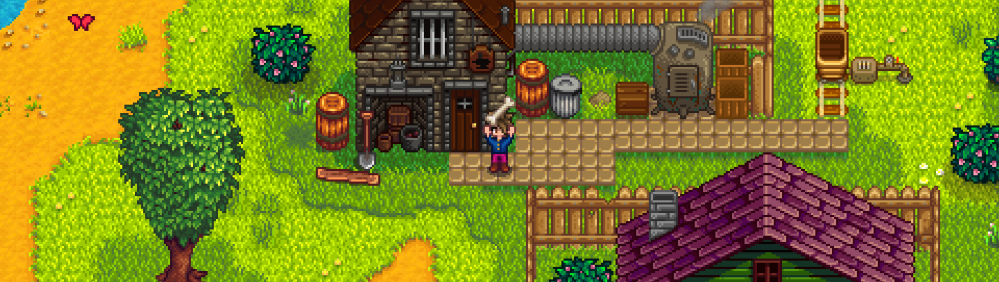
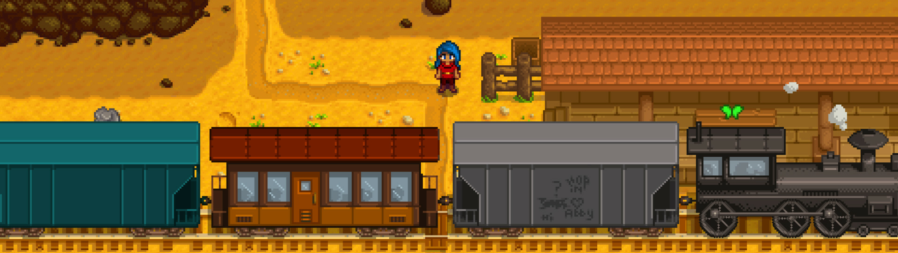

Una de las ventajas que tenemos hoy día de tener acceso a los juegos mediante descarga digital es que lo mismo disfrutamos de una gran superproducción que de la obra de una sólo hombre. Es el caso de Stardew Valley, un juego desarrollado por Eric Barone del que se suele decir que es una combinación de Harvest Moon (ahora Story of Seasons) y Animal Crossing. Y sí, Stardew Valley tiene una fuerte influencia de esas dos series y de algún juego más -como Rune Factory, el spin off de Harvest Moon-, pero tiene su propia personalidad y una jugablidad muy rica.
Desde el ramplón Farmville que tanta guerra dio en Facebook hace un par de años hasta el ya mencionado veterano y excelente Story of Seasons pasando por el popular Farming Simulator, son varios los juegos que te animan a recolectar y vivir la vida de un granjero virtual. En Stardew Valley, si quisieras, podrías limitarte a recolectar, pero tu trabajo con la recolección y la pesca está unido a la aventura que te lleva a empuñar un arma y ambas actividades se orientan, a su vez, a trabajar por la comunidad en la que vives, ya que es un juego con cierto trasfondo social.
Tras personalizar al personaje con más posibilidades de las que cabría esperar en un juego con estilo pixel art, empieza la historia con la muerte de tu abuelo, que te deja en herencia una finca para cuando te sientas hastiado de la vida en la ciudad y quieras cambiar de aires. Llegado ese día te subes al autobús y emprendes rumbo a Pelican Town para empezar de cero en un entorno rural. Pero olvídate de aquello de que la vida en el campo es tranquila y relajada, porque no tardarás en comprobar que te faltará tiempo para todo lo que tienes que hacer.
Por supuesto, cuando llegas a tu hacienda está llena de piedras, madera y hierbas. Los primeros días los pasas limpiando la zona, conociendo a los vecinos y entendiendo el funcionamiento del juego, pero no es un principio aburrido -quitando la parte de desbrozar el terreno, que es repetitiva, por eso es mejor no hacerlo todo seguido- porque, además, vas recorriendo el pueblo y los terrenos que lo rodean e incluso tienes ya las primeras misiones.
Desde estos primeros compases del juego puedes tomar una decisión que marcará la forma de jugar. La Corporación Joja tiene un hipermercado en el pueblo y la voluntad de llegar a ser en el centro de la economía local, intentando hundir a la tienda tradicional.
Si te conviertes en socio de Joja, el ahora abandonado Community Center pasará a ser un almacén y comprarás mejoras en el pueblo y en tu granja a golpe de talón. Pero si decides apoyar la economía local y mantenerte lejos de la corporación irás recuperando el Community Center con tu esfuerzo y vivirás una experiencia más integrada con la naturaleza que con la economía.
Esta segunda opción nos ha parecido mucho más gratificante, porque guarda algunas sorpresas y aumenta el sentido de progresión, vas completando los objetivos de cada habitación para revivirla y es más amena, pero nos ha parecido cuanto menos curioso tener la posibilidad de elegir y de ver cómo Joja intenta en los primeros momentos del juego atraer nuevos clientes tirando los precios de manera puntual en su supermercado. Es un aspecto relacionado con la conciencia social que no esperábamos encontrar aquí.
Los objetivos del Community Center consisten en llevar objetos determinados de todo tipo que has recolectado o encontrado.
El juego tiene tres grandes apartados: tu vida como granjero, el combate y las relaciones sociales. Dentro del primero, el tiempo se divide en estaciones, cada estación dura un mes y cada mes tiene 28 días. Los días comienzan a las 6:20 de la mañana y, si te vas muy tarde a la cama, al día siguiente te despiertas con la mitad de energía. Cada actividad que realizas va consumiendo la barra de energía, que bajará despacio si te dedicas a explorar o a pescar y rápido si cortas leña o luchas.
Por suerte, puedes recuperar parte de esta energía comiendo porque, de otra manera, en las épocas de más actividad a veces tendrías que irte a la cama a mediodía si no quieres desmayarte y tener que pagar por el coste médico de haberte tenido que recuperar y llevarte a tu casa.
Cada estación tiene dos fiestas sociales y unas cosechas propias. Es importante gestionar bien los tiempos porque cuando llega el día 1 todo lo que tuvieras sembrado (con un par de excepciones) se marchita, de forma que hay que tener en cuenta el tiempo que tardan las semillas en crecer. En invierno, cuando todo está lleno de nieve, la cosecha tiene menos importancia y te puedes centrar en la ganadería o en el combate y las relaciones sociales, de forma que siempre tienes actividades y el juego nunca se hace aburrido.
Al contrario, tendrás que decidir prioridades para ver qué haces cada día una vez que has terminado las tareas cotidianas de ver el parte metereológico en la televisión, regar y cuidar de los animales. ¿Te vas de pesca, a la mina a luchar o das una vuelta por el pueblo para hablar con los vecinos y repartir unos cuántos regalos? O quizás te convenga ir a recolectar por todo el bosque la fruta silvestre de temporada. Siempre hay actividades y el dilema es por cuál decidirse o ver cuál te va a dar tiempo a hacer en lo que queda de día.
Con los recursos que encuentras durante la exploración o los que consigues en la granja puedes ir mejorando las herramientas que utilizas o construir numerosos y útiles objetos, todo de una manera muy sencilla. El herrero mejora los aperos y fabricas elementos nuevos con el menú de crafteo en el que sitúas el cursor sobre cada objeto para ver los materiales que necesitas. Una vez que has realizado la primera ampliación de la casa, cocinar alimentos que te proporcionen energía o ventajas o sirvan como regalo para los vecinos.
La pesca es una buena opción para el invierno, aunque, como suele suceder en este tipo de juegos, hay peces estacionales y que salen sólo ciertas horas o con determinadas condiciones metereológicas. Cuando enganchas a un pez con tu caña empieza un minijuego de dificultad muy variable en cada caso: debes mantener el pez dentro de una barra color verde que sube cuando pulsas el botón izquierdo del ratón y baja al dejar de pulsarlo. A la derecha hay una barra que aumenta despacio cuando el pez está dentro del rectángulo verde y baja rápido cuando está fuera. Si desaparece, el pez escapa. Cuesta unos cuantos intentos coger el tranquillo. Lo cierto es que consigue transmitir una sensación bastante real de que estás luchando contra el pez por capturarlo.
Tienes una buena cantidad de plantas para cada estación que crecen a ritmos diferentes, (carísimos) árboles frutales y variados animales de granja (incluso puedes construir un establo para un caballo y un edificio para criar slimes, uno de los enemigos). Y el invernadero, cuando ya llevas el juego avanzado, te permite sembrar especies fuera de temporada.
Stardew Valley ha resultado una agradable sorpresa con una jugabilidad muy buena que está realizada con pasión por el género, prescindiendo de tutoriales -aunque logra enseñar muy bien sus normas al jugador- y de elementos innecesarios; en ningún momento sientes que haya una parte de relleno, no hay largas chácharas ni enrevesadas historias y las horas de juego van pasando ligeras y entretenidas.
La historia es bastante plana y sencilla, pero ir mejorando el Community Center poco a poco es satisfactorio y las nuevas zonas y posibilidades se abren a buen ritmo. El pueblo está lleno de vida y los vecinos no deambulan, sino que siguen unas costumbres. A media tarde van cerrando las tiendas y el lugar de encuentro suele ser el pub.
El componente socioeconómico que te pide posicionarte entre la globalización y el desarrollo sostenible de la zona le da un toque extra interesante que lo convierte en una pequeña joya que nos ha enamorado por completo.